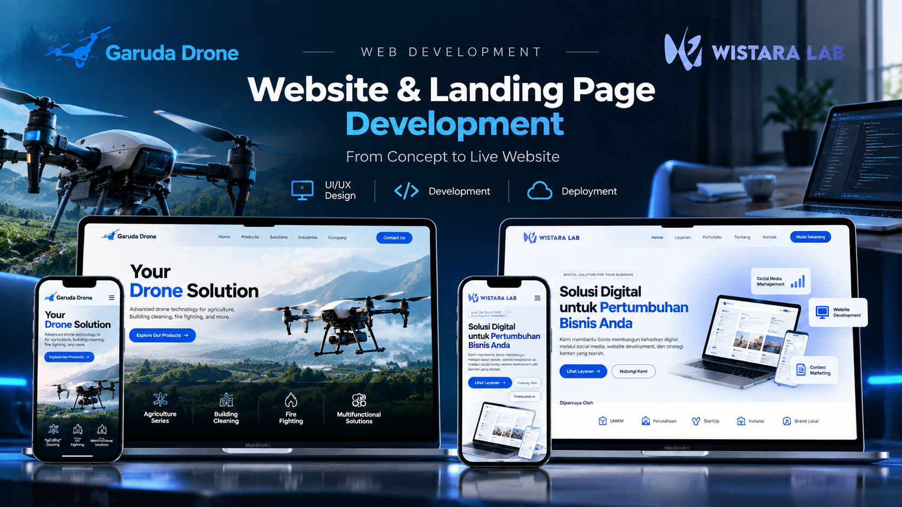
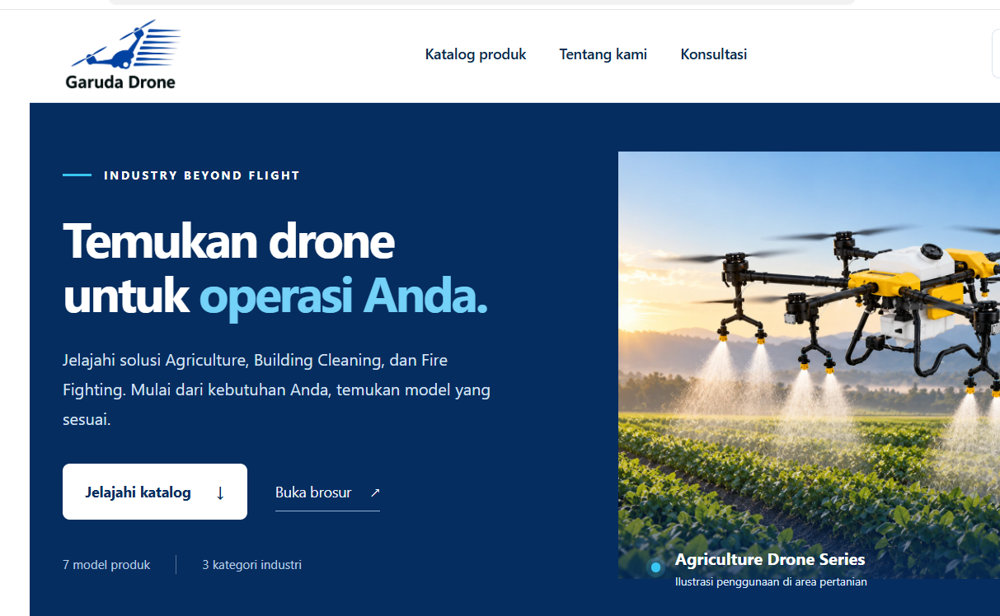
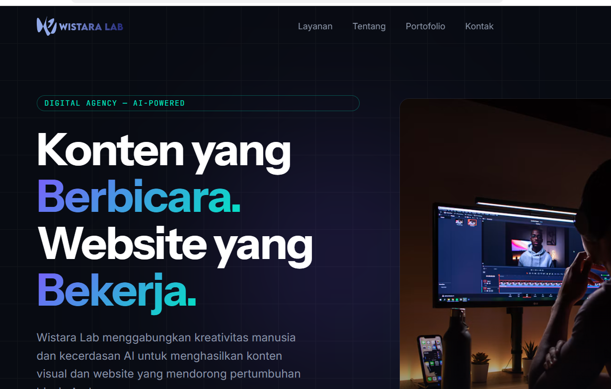

From Concept to Live Website.
Dua proyek website yang saya kerjakan secara end-to-end, dari perencanaan struktur dan desain antarmuka hingga pengembangan dengan VS Code dan Codex serta publikasi website.

Building Digital Experiences
Setiap proyek memiliki kebutuhan dan identitas visual berbeda. Garuda Drone berfokus pada penemuan produk dan solusi industri, sedangkan WistaraLab memperkenalkan layanan digital agency. Saya menangani perencanaan, pengembangan, penyesuaian tampilan, dan publikasi kedua website dengan dukungan AI coding assistant.
Garuda Drone
Landing page untuk memperkenalkan produk dan solusi drone di bidang Agriculture, Building Cleaning, dan Fire Fighting.

Project Objective
Membantu pengunjung memahami kategori solusi drone, menjelajahi katalog dan brosur, serta menemukan jalur komunikasi dengan tim.
Key Features
Hero produk, kategori Agriculture / Building Cleaning / Fire Fighting, navigasi katalog, akses brosur, CTA kontak, dan tampilan responsif.
Visual website merupakan screenshot proyek asli yang ditampilkan untuk dokumentasi portfolio.
WistaraLab
Website digital agency dengan identitas visual modern untuk memperkenalkan layanan, portfolio, dan jalur kontak bisnis.

Project Objective
Menampilkan positioning digital agency, memperkenalkan layanan dan hasil kerja, serta mempermudah pengunjung menemukan informasi kontak.
Key Features
Visual branding dark mode, navigasi layanan, portfolio, CTA Lihat Layanan / Lihat Portofolio, dan jalur kontak.
Visual website merupakan screenshot proyek asli yang ditampilkan untuk dokumentasi portfolio.
End-to-End Development
Saya mengerjakan kedua website secara mandiri, mencakup perencanaan konten dan struktur, pengarahan UI/UX, pengembangan kode melalui VS Code dan Codex, pengujian tampilan, revisi, hingga publikasi.